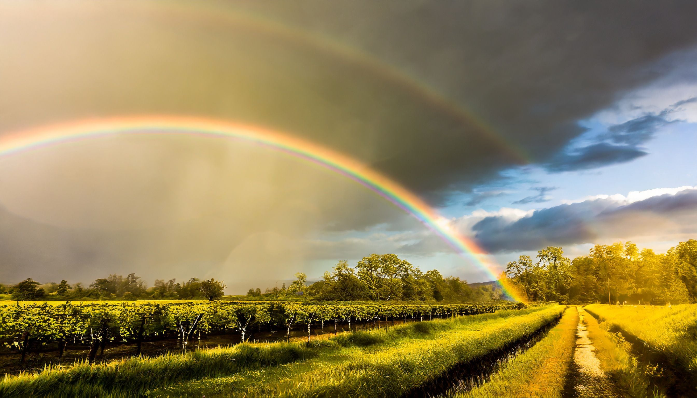
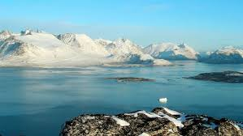

EL CLIMA
El clima es el conjunto de condiciones atmosféricas que caracterizan una
región durante largos períodos de tiempo, como la temperatura, la lluvia y el viento.
Existen distintos tipos de clima según la ubicación geográfica, como el tropical,
el frío o el árido. Factores como la latitud, la altitud y la cercanía al mar influyen
en él. Actualmente, su estudio es importante debido al cambio climático y su impacto en el planeta.

GROENLANDIA
El clima de Groenlandia es polar y muy frío durante casi todo el año. En invierno
las temperaturas pueden bajar de −30 °C y en verano rara vez superan los 10 °C. Gran parte del territorio
está cubierto de hielo y nieve, y fenómenos como la noche polar y el sol de medianoche son comunes.
El cambio climático está acelerando el deshielo en la región.
